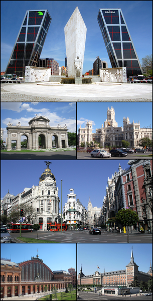

|
Coridele Ibiza Tenerife Madrid Barcelona Bilbao Valencia |

MadridPuncte importante culturale și turistice includ faimosul Muzeu Prado, Muzeul Thyssen Bornemisza, Centrul de Artă Regina Sofia (unde se află Guernica lui Pablo Picasso), Casón del Buen Retiro, Palatul Regal, Templo de Debod, Monasterio de las Descalzas Reales, Puerta del Sol, Parque de Retiro, și Chueca. Alte orașe învecinate sunt populare pentru călătoriile de o zi din Madrid, incluzând Toledo, Segovia, Ávila, Aranjuez, Alcalá de Henares, mănăstirea și complexul de palate de la El Escorial, și Santa Cruz del Valle de los Caídos. Madrid este cunoscut și pentru viața sa de noapte și discotecile sale; pentru madrileni nu este ieșit din comun să danseze toată noaptea, iar apoi dimineața să meargă la muncă. Această viață de noapte numită la movida, a înflorit după moartea lui Franco. Madrid este servit de Aeroportul Internațional Barajas. În ciuda populației orașului în jur de patru milioane (madrileni sau madrileños), metroul madrilen este una dintre cele mai extinse și mai rapid dezvoltate rețele de metrou din lume. Mănăstirea și Escorialul din Madrid au fost înscrise în anul 1984 pe lista patrimoniului cultural mondial UNESCO. În centrul Madridului, în Plaza de Castilla, se află 4 zgârie-nori cu înălțimi cuprinse între 250 și 236 metri. |